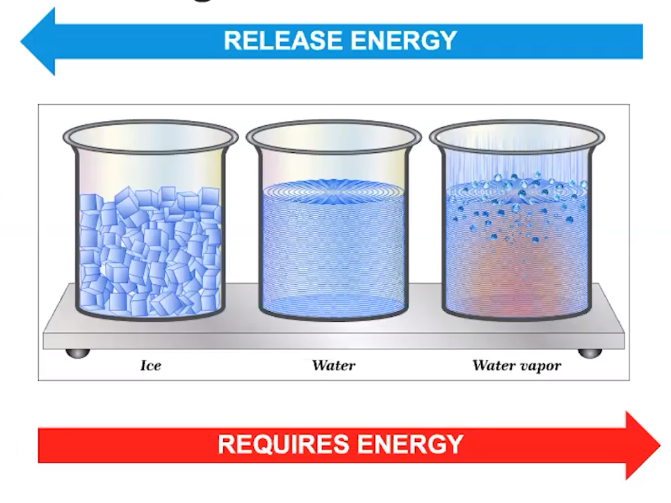
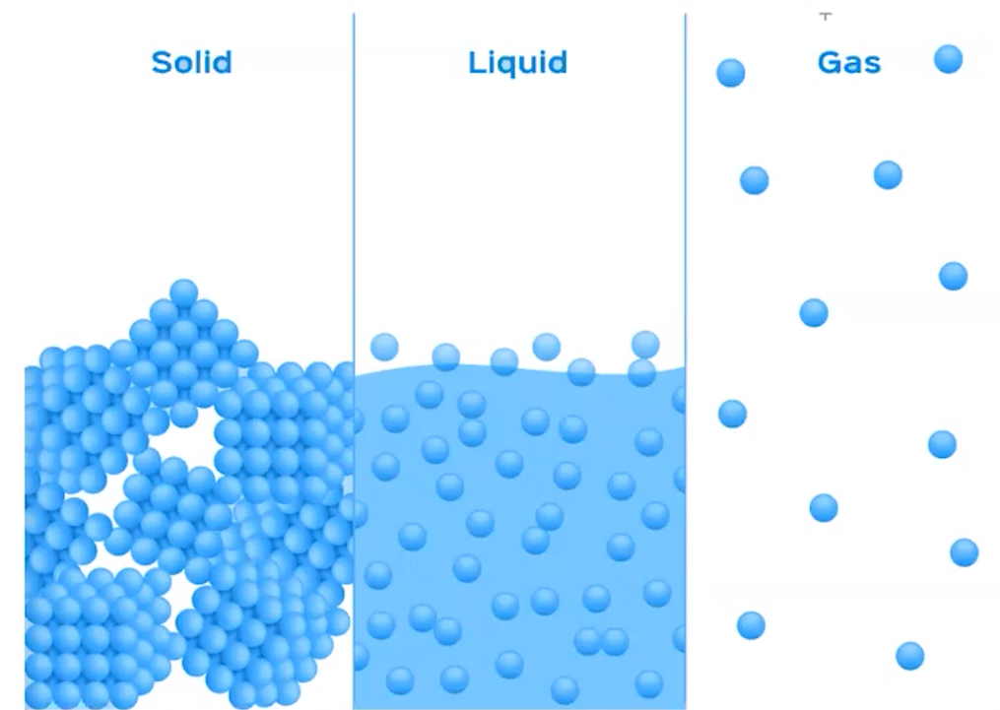
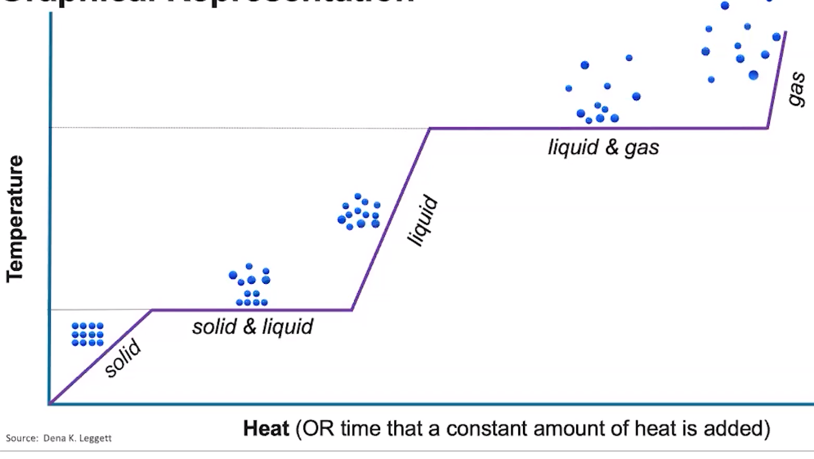
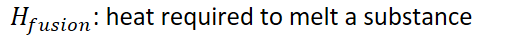
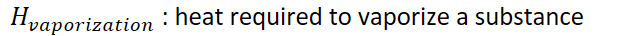
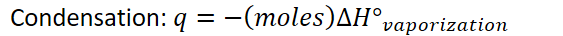
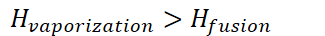

Energy of states
Ice is at a very low potential energy
Gas is at a very high potential energy
Liquid is somewhere in the middle
<!-- -->
When going from a state with high potential energy, to one with low potential energy, energy will be released (exothermic)
When going from a state with low potential energy to one with high potential energy, energy will be required (endothermic)
{width="5.03125in" height="3.7708333333333335in"}
Molecular representation
Intermolecular attractions are very prominent in solids, prominent in liquids, almost nonexistent in gases
Takes energy to break those intermolecular attractions
Releases energy when intermolecular attractions are formed
{width="5.010416666666667in" height="3.5625in"}
Require energy:
Solid => liquid: melting
Liquid => gas: vaporizing
<!-- -->
Release energy
Gas => liquid: condensation
Liquid => solid: freezing
<!-- -->
{width="6.958333333333333in" height="3.9166666666666665in"}
Plateaus exist where both states are present
During melting: solid and liquid
During vaporization: liquid and gas
Temperature does not change during a phase change (plateaus)
Energy goes into breaking/making attractions
Melting point
Boiling point
<!-- -->
<!-- -->
Heat capacity changes based on state
{width="7.979166666666667in" height="0.3541666666666667in"}
{width="5.46875in" height="0.375in"}
{width="6.635416666666667in" height="0.375in"}
During phase changes: (endothermic)
{width="5.96875in" height="0.375in"}
{width="7.166666666666667in" height="0.375in"}
<!-- -->
In exothermic cooling, simply change the sign
Energy is released when going from a gas to liquid, liquid to solid
{width="4.59375in" height="0.375in"}
{width="5.864583333333333in" height="0.375in"}
The wider the line segment is, the more energy it takes
More attractive forces are broken going from a liquid to gas then a solid to liquid
{width="3.3854166666666665in" height="0.375in"}
Additionally, more energy is released when forming attractions from gas to liquid than when forming attractions from liquid to solid